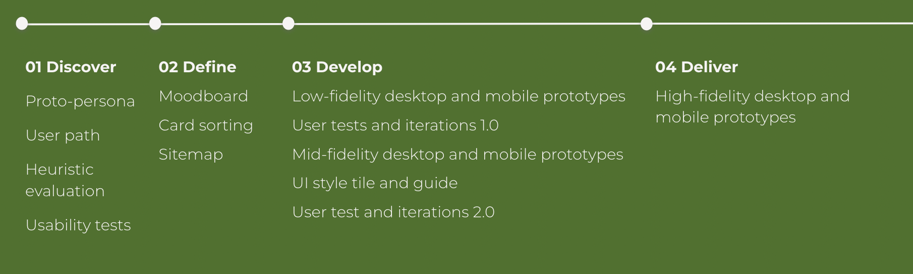
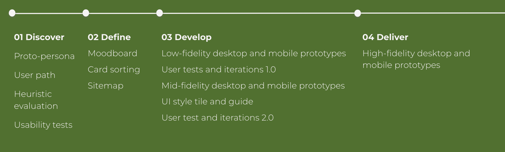
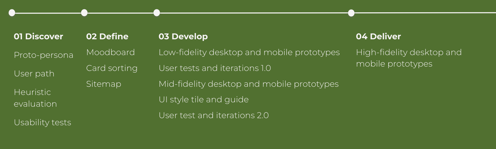
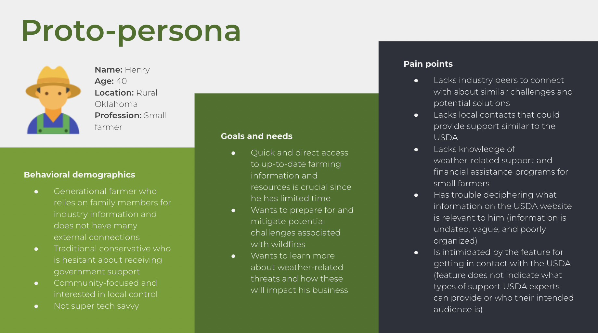

Government websites can often be overwhelming and challenging to navigate due to the vast amount of information presented to users.
• Identify a common user group for the U.S. Department of Agriculture (USDA) website
• Redesign the USDA website to meet the needs and goals of the identified user group
Reimagine a government website’s potential through a responsive redesign that focuses on the needs of a single user group.

I began this project by considering the most frequent visitors to the USDA website and how their goals and needs could inform the format of a redesigned website.
In particular, I wondered how farmers could benefit from a site targeted to their work and challenges given the significant role that they play in agriculture.
I then created a farmer proto-persona to further explore this user’s reasons for going to the USDA website.
I also conducted a heuristic evaluation of and usability tests for the current USDA website in order to gain a deeper understanding of the site’s shortcomings.
Key takeaways from heuristic evaluation
Improve content and navigation by enhancing clarity, organization, hierarchy, and placement as well as reducing the volume of information
Key takeaways from usability tests
Strengthen visibility of key features, enhance visual appeal and organization, reduce number of clicks needed to access key information, provide more action-oriented information
After learning about user challenges with the current USDA website, I began gathering inspiration and ideas for what the redesigned site could look and feel like. Creating a moodboard, conducting a card sorting activity, and devising a new sitemap provided me with the building blocks for developing a clean, streamlined, and easy to navigate site.

Initial user tests indicated that the design was on track to deliver a clean, easy to navigate website. Only a few adjustments were needed to improve clarity and navigation.
The second round of user tests yielded positive feedback on the website’s aesthetics, with 7/7 users commenting that the site had a clean and streamlined appearance. Again, only a few adjustments were needed to improve clarity and navigation.

• Redesign other USDA webpages and conduct additional user tests to examine reactions to other components in the UI style guide
• Test redesign with targeted user group to examine reactions among intended users